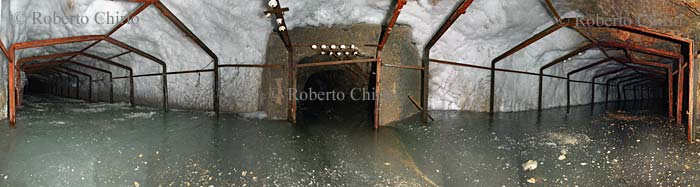

La Batteria dello Chaberton
Fortificazioni

La visita all'interno della Batteria Chaberton e dei bunker sono a rischio di pericolo, non si assumono nessuna responsabilità per danni a persone e cose.
Chi entra lo fa a proprio rischio.
VISITA ALL'INTERNO DELLE CAVERNE E TUNNEL ARTIFICIALI:
- Non avventurarsi mai da soli all'interno di ingressi in caverna sconosciuti.
- Lasciare sempre detto quale è la destinazione.
- Portarsi più di una torcia di ottima affidabilità a persona, e conoscerne l'autonomia.
- In caverna la temperatura è in media da 0 a 10°C, anche in estate. (Sotto zero allo Chaberton) Occorre un adeguato abbigliamento.
- Per sicurezza sempre meglio avere una corda di almeno 10mt. ed eventualmente indossare un elmetto di protezione, in presenza di ghiaccio è necessario avere ramponi da ghiaccio.
- Non fare affidamento sul telefonino, in quanto all'interno delle gallerie non c'è segnale, bisogna uscire all'aperto e portarsi sul versante Italiano.
- Non asportare il poco che resta.
- Non lasciare tracce del passaggio.
Fotografie e video all'interno dei bunker e tunnel sotterranei:
Per realizzare delle buone fotografie all'interno delle fortificazioni è necessario un flash potente (ng 38/45), a volte meglio avere un secondo flash da utilizzare con una cellula servo. Per non avere delle ombre dure è bene orientare il flash verso l'alto, dove e quando il soffitto e le pareti sono di colore chiaro.
Un' ottica da 28mm oppure meglio da 24mm permette i migliori risultati di campo visivo in quanto i locali sono in genere molto stretti. Ideale lo zoom da 17-35mm che copre bene tutte le esigenze grandangolari del reportage. Con uno zoom da 28-200mm potete inquadrare e mettere in risalto anche i particolari.
All'interno se il flash non è potente, è bene impostare la sensibilità almeno per 400 ASA, si ottengono anche buoni risultati senza flash, usando la macchina sul cavalletto e illuminando con una buona lampada tutto l'ambiente. (Posa B - open-flash)
Le macchine fotografiche digitali di marca e con caratteristiche medio alte, permettono di ottenere buoni risultati sia all'esterno che all'interno dei bunker. Consiglio di impostare la sensibilità relativa sui valori minimi (50/100 ASA) quando si è all'esterno in giornate soleggiate. Per gli interni impostare la sensibilità a valori di 200/400 ASA questo per ottenere la migliore resa dal flash incorporato accoppiata a una buona profondità di campo. Migliori risultati se si setta la temperatura colore su flash.
E' meglio scegliere i modelli di punta che permettono di usare un flash esterno di maggior potenza.
Riprese video vanno fatte con una buona illuminazione, utilizzando lampade a batteria. Un illuminatore da 20W è sufficiente per uso amatoriale, ma se vogliamo risultati migliori consiglio un illuminatore da 100W. Ottimo l'illuminatore a led http://www.chirio.com/led_video_3p7.htm
All'interno delle fortificazioni in caverna oltre alla bassa temperatura, è presente una forte umidità e un continuo gocciolamento di acqua.
Dove non è presente umidità è possibile trovare polvere molto soffice simile al cemento, che viene facilmente alzata camminando, prestare una certa attenzione alle ottiche intercambiabili.
E' consigliabile avere batterie di scorta e proteggere le attrezzature con una opportuna protezione antipioggia/antipolvere.
Una lampada frontale da mettere sulla testa vi permetterà di muovervi facilmente e di avere entrambe le mani libere.
[home]
È
vietato ogni utilizzo non autorizzato delle foto e video.
Photos and videos are copyright © Roberto Chirio: all rights reserved.